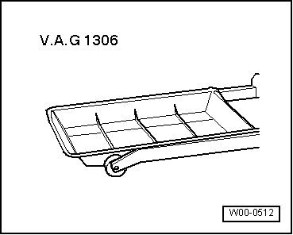
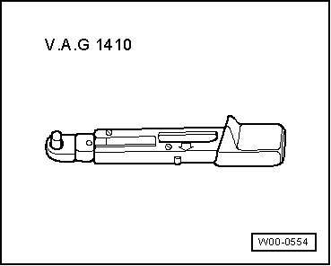
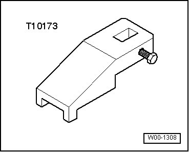

Hydraulic Controls
Special Tools
Special tools, testers and auxiliary items required
• Drip tray (VAG 1306)

• Torque wrench (VAG 1331)

• Torque wrench (VAG 1410)

• Headlight washer adjustment tool (T10173)



